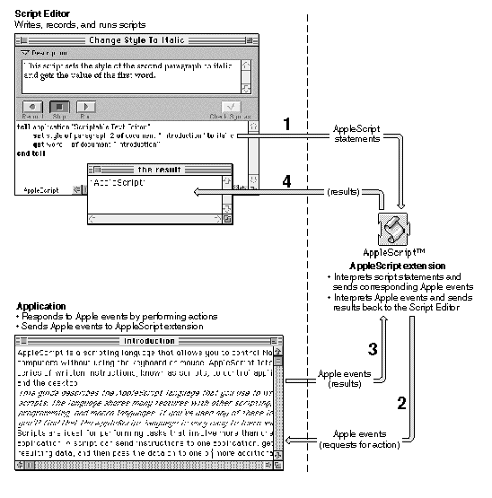

Statements
Every script is a series of statements. Statements are structures similar to sentences in human languages that contain instructions for AppleScript to perform. When AppleScript runs a script, it reads the statements in order and carries out their instructions. Some statements cause AppleScript to skip or repeat certain instructions or change the way it performs certain tasks. These statements, which are described in Chapter 7, are called control statements.Figure 2-1 How AppleScript works

All statements, including control statements, fall into one of two categories: simple statements or compound statements. Simple statements are statements such as the following that are written on a single line.
tell application "Scriptable Text Editor" to print the front windowCompound statements are statements that are written on more than one line and contain other statements. All compound statements have two things in common: they can contain any number of statements, and they have the wordend(followed, optionally, by the first word of the statement) as their last line. The simple statement of the first example in this section is equivalent to the following compound statement.tell application "Scriptable Text Editor" print the front window end tellThe compound Tell statement includes the linestellapplication "Scriptable Text Editor"andend tell, and all statements between these two lines.A compound statement can contain any number of statements. For example, here is a Tell statement that contains two statements:
tell application "Scriptable Text Editor" print front window close front window end tellThis example illustrates the advantage of using a compound Tell statement: you can add additional statements within a compound statement.Here's another example of a compound statement:
- Note
- Notice that this example contains the statement
print front windowinstead ofprint the front window. AppleScript allows you to add or remove the wordtheanywhere in a script without changing the meaning of the script. You can use the wordtheto make your statements more English-like and therefore more readable. if the number of windows is greater than 0 then print front window end ifStatements contained in a compound statement can themselves be compound statements. Here's an example:
if the number of windows is greater than 0 then print front window end ifStatements contained in a compound statement can themselves be compound statements. Here's an example:tell application "Scriptable Text Editor" if the number of windows is greater than 0 then print front window end if end tell